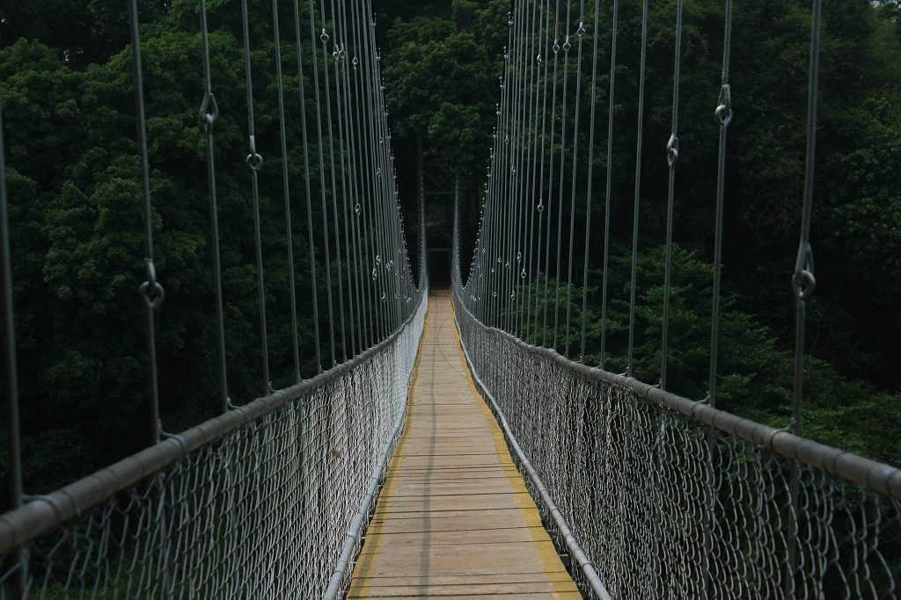
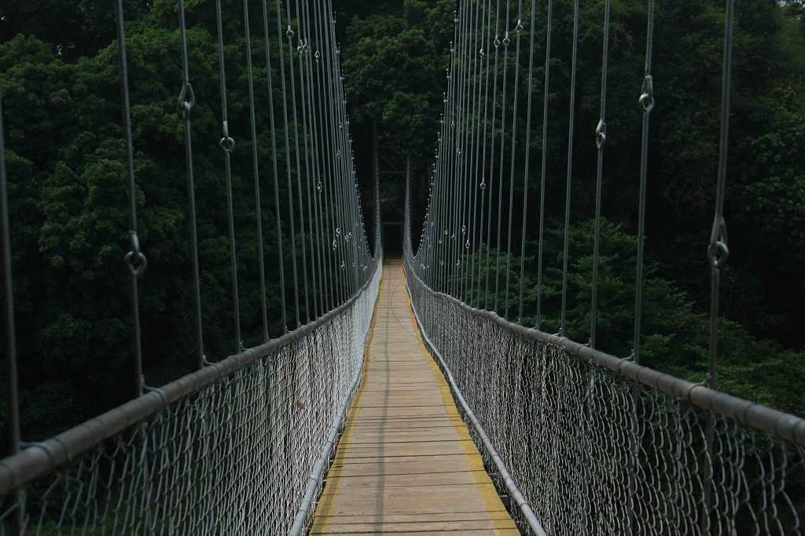

MAIN ATTRACTIONS
Nedumkayam
Nedumkayam is a rainforest and a part of the Nilgiri Bioreserve. It is mostly known for its dense forestation with several species of flora and fauna including some rare and endangered species and several mesmerising water bodies making it is a perfect attraction for nature lovers. The region has a charming little guest house from where one can observe and capture photographs of the surrounding forest.
 


Kottakkal Arya Vidya Sala
Arya Vidya Sala is a famous Ayurvedic health care centre in India. It was founded by Vaidyaratnam P. S Warrier in 1902 to promote traditional healing techniques for wholesome living. They now have a group of institutions with its headquarters in Malappuram for the practise and promotion of the ancient health care system.
Pazhayangadi Mosque
Pazhayangadi Mosque is a 500-year-old monument built in the memory of a Mohammed Shah. The stunning structure is a fabulous example of the Mughal style of architecture made of pristine white marble. The mosque is a bustling pilgrim centre, especially during the Kondotty Nercha festival.


Kadalundi bird sanctuary
Scattered over a cluster of islands on the confluence of the Kadalundipuzha River and the Arabian Sea, this sanctuary is home to over a hundred species of native birds, and around 60 species of migratory birds.
Kottakkunnu
Kottakkunnu is a mesmerising garden situated on a hill. Its beauty is often compared with the picturesque Marine Drive in Mumbai. The attraction has a Water Park, an Adventure Park, an Art Gallery, 16D cinema, an Open Air Theatre and a Balloon Park. These amusements make Kottakkunnu a perfect picnic spot.